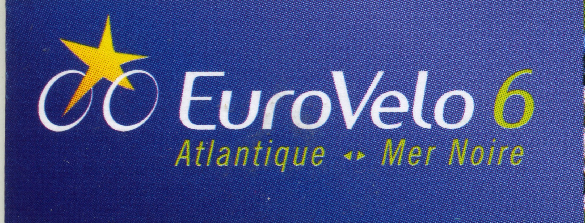
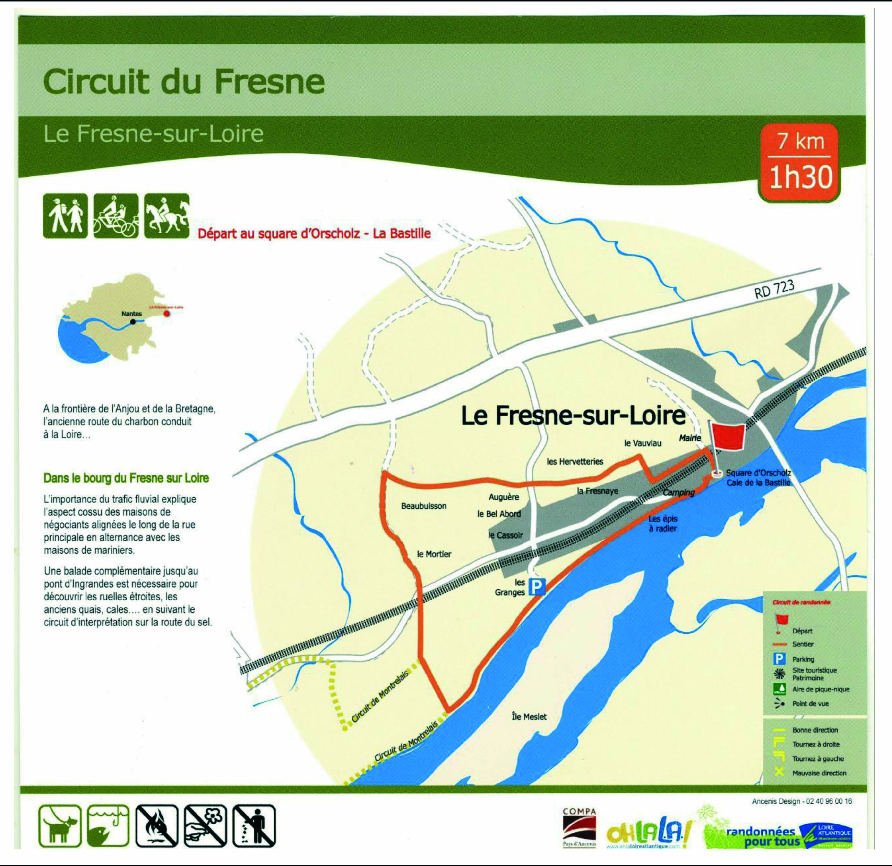
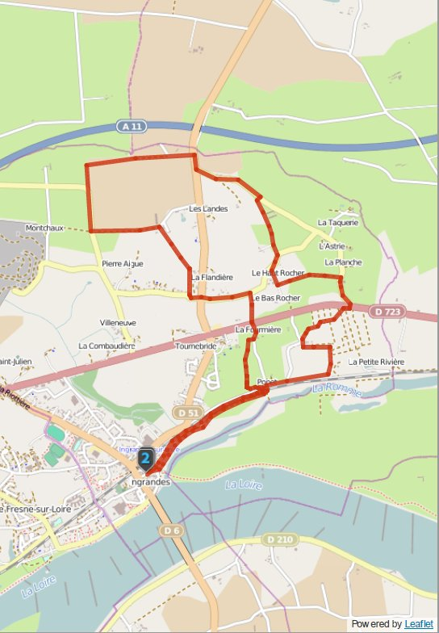
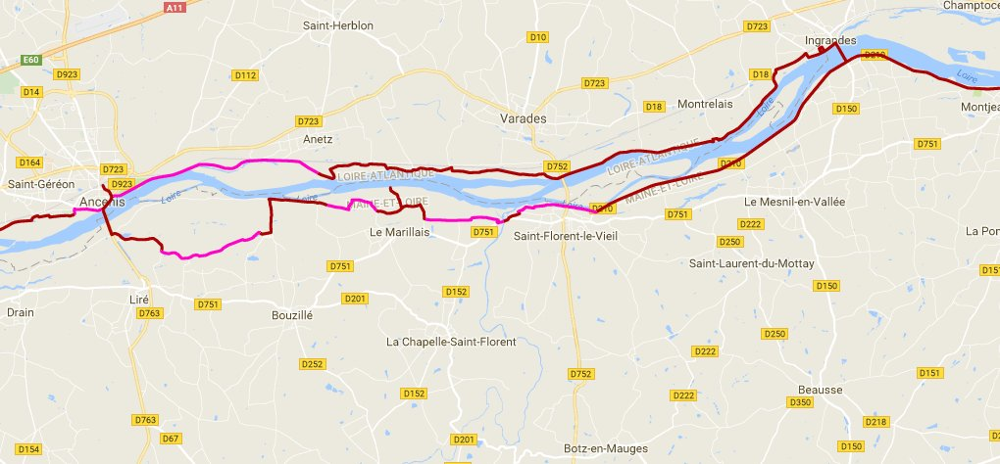

Commune d'Ingrandes-Le Fresne / Loire
Association Tourisme Culture et Patrimoine
Les balades ...
Retour à la page d'accueil




Le circuit du Fresne
Le Sentier de Madame
Les Boucles en vélo
Le GR3E